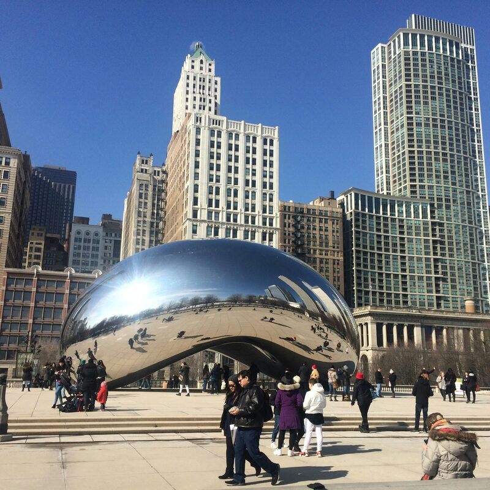

let us know what you're working on and see how we can help
where our teams are located

Please enter your first name.
Please enter a valid email address.
* required
Something went wrong sending your message. Please try again, or email us directly.
We'll respond within 2 business days.